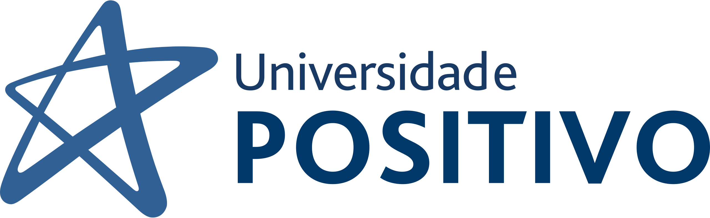
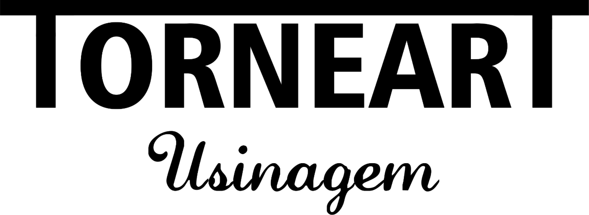

Sobre mim

Meu nome é Matheus Kudlake, nascido em 2005 em Londrina, Paraná. Apaixonado por tecnologia e informática, possuo experiência em trabalhos e estudos de diversas áreas, como mecânica, robótica e mecatrônica. Sou atualmente estudante de Análise e Desenvolvimento de Sistemas pela Universidade Positivo em Londrina.
Formação acadêmica
Concluí em 2023 o ensino médio integrado ao curso de mecatrônica pelo CEEP - Castaldi em Londrina. Estudei programação como um hobby durante esse período, e no início de 2024 iniciei o curso de Análise e Desenvolvimento de Sistemas na Universidade Positivo de Londrina, onde permaneço até o momento, atualmente cursando o 2º semestre.
Experiência profissional
Trabalho desde muito tempo e também atualmente na TORNEART - Usinagem, uma empresa de tornearia mecânica e CNC, onde adquiri experiência com programação de máquinas CNC como torno e fresadora com a utilização da linguagem Código G, e também a operação de máquinas de usinagem de operação manual.
Objetivos
Meus objetivos atualmente são de dar continuidade à carreira profissional já desenvolvida no ramo da usinagem, porém integrar ao meu trabalho atual todo o conhecimento que já adquiri e ainda estou para adquirir em minha carreira acadêmica, aproveitando da versatilidade que a área da tecnologia proporciona, sua evolução e popularização cada vez mais notáveis.